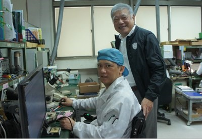

<script src="header.js"></script>

<main class="news-d">

<div class="inner">

	<div class="news-d-t">
		<div class="news-d-n">GIGATEK builds a friendly workplace for employees with disabilities to stay for 20 years</div>
		<div class="news-d-d">2016-02-03<span class="publisher"><i class="fas fa-pen-nib"></i>Taichung City Labor</span></div>


	</div>
	<div class="news-d-i">
		<p>
			With the recognition and support of the private sector, the Taichung City Labor Affairs Bureau (LAB) has made great performance in employment guidance for people with disabilities, with a total employment rate of 150%. GIGATEK Inc., a Taiwan-based provider of electronics manufacturing services (EMS) and original equipment manufacturing (OEM) service, even hires five people with disabilities, more than obligatory quota. Apart from employment by talent, President (General Manager) Ying-Chuan Sung builds a safe and friendly workplace for them, earning GIGATEK the second Outstanding Performance for the year at the commendation ceremony held on December 7.
			<br><br>
			According to LAB Director He-Ting Huang, the employment number of people with disabilities increases every year in Taichung with the long-time support of the private sector. Statistics show that there are currently 1,939 obligatory agencies/organizations/institutions complying with the employment quota and a total of 5,335 people with disabilities have been hired by these agencies/organizations/ institutions under the “People with Disabilities Rights Protection Act”. So far, a total of 8,043 people with disabilities have been employed, with an employment rate pf up to 150.76%. Many enterprises even employ people with disabilities in excess of the obligatory quota. By hiring people with disabilities beyond the obligatory quota over time, GIGATEK is a practical model business employer.
			<br><br>
			Apart from hiring people with disabilities over time, GIGATEK builds an accessible environment and provides friendly assistance for employees with disabilities. All these deeds have thus earned it the Outstanding Performance Award from LAB. “This is our corporate social responsibility. Besides, building an accessible environment for employees with disabilities, we can make them feel that it is safe to work at GIGATEK and increase productivity. This is thus absolutely a win-win policy for both sides,” said President Sung modestly.
			<br><br>
			Source:&nbsp;&nbsp;<a href="https://www.labor.taichung.gov.tw/23939/24256/24259/772942/post" target="_blank">https://www.labor.taichung.gov.tw/23939/24256/24259/772942/post</a>
		</p>
		<br>	 
		<a class="venobox" href="public/SRC/images/news/friendly_workplace.jpg"></a>
		<br>
		<p>
		<div class="title">Employment of People with Disabilities</div>
		 The obligatory quota system is designed to protect and promote employment for people with disabilities. Under this system, agencies/organizations/institutions with employees reaching a certain number are obliged to hire people with disabilities to encourage employers to voluntarily release job opportunities for people with disabilities. Apart from enabling people with disabilities to demonstrate their specialties and fuse with society, this system re-wakes the public and employers to recognize the competency and capacity of people with disabilities. Therefore, agencies/organizations/institutions that cannot fill the obliged quota will need to a difference subsidy, which is a special contribution (sonderabgaben) for failure to perform the statutory obligation. The difference subsidiary is deposited in the Disabled Employment Funds of local governments for implementing matters in relation to promoting employment for people with disabilities.
		 <br><br>
			For more information regarding the “obligatory quota” system, please visit&nbsp;&nbsp;<a href="https://www.wda.gov.tw/cp.aspx?n=7AF57F63C66F7B3C" target="_blank">https://www.wda.gov.tw/cp.aspx?n=7AF57F63C66F7B3C</a>

	</p>
	</div>
	<a href="news.php" class="btn">Back</a>

</div>

</main>

<nav class="bread">

	<div class="inner">

		<a href="index.php">Home</a><span class="bread-space">/</span><a href="news.php">NEWS</a>

	</div>


</nav>

<script src="footer.js"></script>